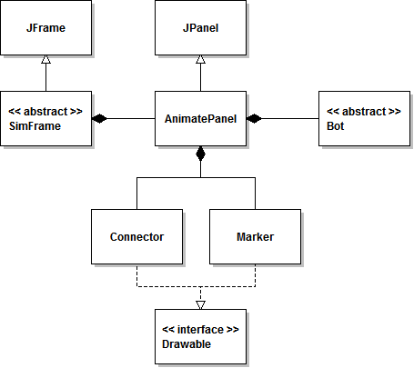
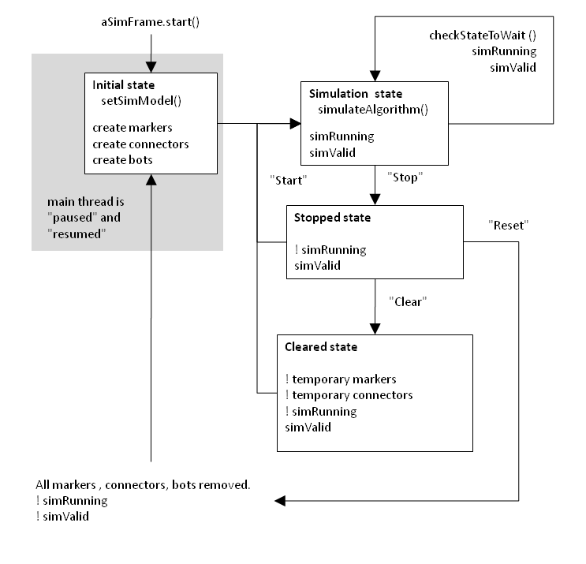
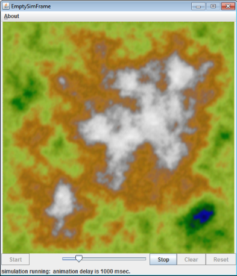

Last updated 8/24/2013
This framework consists of the classes shown in the class diagram below. The documentation for each class has an expanded UML class diagram (see distribution's Doc subdirectory).
Classes in framework

Students will define a subclass of SimFrame. (DemoSimFrame is an example of such a sub-class). In that sub-class they will define/override inherited abstract setSimModel() and simulateAlgorithm() methods.
Classes in DemoSimFrame
The simulation starts by invoking the inherited SimFrame start() method. The method start() sets up a simulation model (setSimModel()), sets the enable/disable state for the "state control" buttons, sets the simValid and simRunning state condition booleans true, and calls simulateAlgorithm(). While the simulation is running the boolean flag simRunning will be true. The diagram below shows the states and "state control" buttons presses that change simulation state.
Simulation States

Animating Algorithms
As shown in the Simulation States diagram above there are 2 boolean state variables (simValid and simRunning) and 3 methods (setSimModel(), simulateAlgorithm(), and checkStateToWait()) used. These variables are methods are protected and declared in class SimFrame. Your application class extends class SimFrame. The abstract methods setSimModel() and simulateAlgorithm() must be defined in your application class.
Your application class's begins algorithm simulation by calling its inherited start() method. The start() method will call the setSimModel() method, set simValid and simRunning true, set the state of the AnimatePanel's control buttons with animatePanel.setComponentState(...), and call simulateAlgorithm().
The variable simulationValid is true when a algorithm ("model") is ready for simulation (animation). The variable simRunning is true while an algorithm is being simulated. A model can be valid and not be running. This occurs when the simulation is paused, so that it can be inspected. A model can not be running if it is not valid. Both of these variables are set true by SimFrame's start() method.
While simulateAlgorithm() is running in its while(simRunning) loop the user can stop, start, clear, reset, or change the speed of the simulation with the AnimatePanel's control buttons and slider. The current state of the simulation can be displayed as a test message in AnimatePanel's statusLine at the bottom. A screen shot of an empty simulation is shown below.
Simulation Framework GUI

There are three "application" files provided: DemoSimFrame.javae, EmptySimFrame.java, and RandomBinaryTreeDemo.java. EmptySimFrame application does not simulate an algorithm but does have all required method calls and loads a terrain texture. This is a good starter project for Comp 282 students. DemoSimFrame application simulates a simple algorithm for drawing random markers (in a random walk) and connectors. RandomBinaryTreeDemo simulates Binary Search Tree insertions and algorithm timing.
Compiling the Simulation Framework and Applications
To compile the Simulation Framework use the command line javac compiler or the IDE of your choice. You should only have to compile SimFrame.java to also compile all other classes. Otherwise, use (or look at) the files makeAll.bat (Windows command prompt script) or makefile (Linux/Mac shell script) in the distribution.
Once the Simulation Framework has ben compiled you will need to have its classes in your current CLASSPATH for compiling applications that use the Simulation Framework. You can set the CLASSPATH variable in your current command shell (Command prompt console window) using the set command.
On windows systems the preferred solution is to edit the environment variable PATH and/or CLASSPATH. For example with Windows 7
start | control panel | System | advanced system settings | environment variablesTo set environment variables in a command prompt console (each time it is opened).
set C // will display all C* environment variables set CLASSPATH=%CLASSPATH%;<path to SimulationFrameworkV3 subdirectory> for example on my system the enviroment variables for CLASSPATH and PATH are (I have used the string "<...>" for other subdirectory entries, I recommend you add to the end of your existing CLASSPATH and PATH variables): CLASSPATH=.;"<...>";C:\Users\renzo\Documents\Csun\cs282\282F13\282projects\SimulationFrameworkV3;"<...>" PATH="<...>";C:\Users\renzo\Documents\Csun\cs282\282F13\282projects\SimulationFrameworkV3\SimulationFramework;"<...>"To compile at the command line without setting any environment variables
javac -classpath .;<path to SimulationFramework subdirectory> DemoSimFrame.javaTo run at that the command line without setting your classpath
java -classpath .;<path to SimulationFramework subdirectory> DemoSimFrame
Apologies
I have tried to design and implement the SimulationFrameworkV3 as transparently and correctly as I could. Since it is on its third version, I trust I have found (with student help) and corrected most errors. You may infrequently encounter thread "AWT-EventQueue-0" related exceptions (eg, pumpEvents, concurrentModification). Ignore these non-fatal exceptions in your assignments they will not affect your grade. There are examples below. Of course you must try-catch all fatal exceptions in your assignments. If you have questions about this, talk with me.
java.awt.EventDispatchThread.pumpEvents(Unknown Source) or java.util.ConcurrentModificationException java.util.ArrayList$ITR.checkForComdification(...)